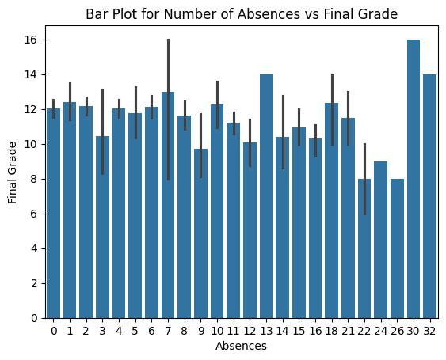
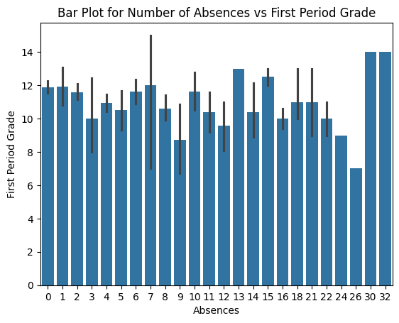
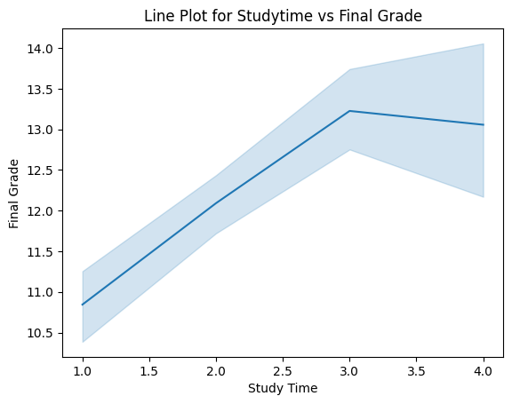
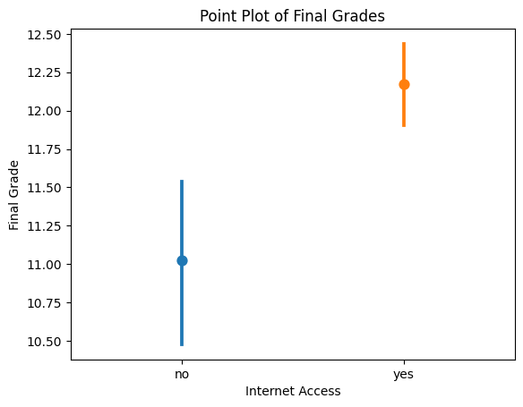
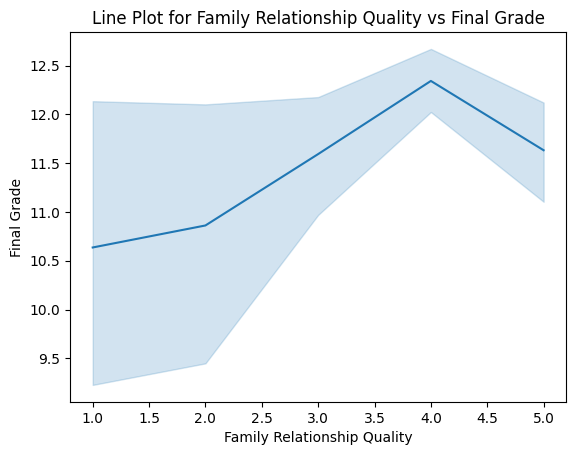

Education Analysis Project
Zane Hutchens - January 26, 2024The Problem
I would like to try to solve how student demographical information can be used to identify students who may benefit from extra support in the classroom. I believe this datset contains the perfect information for that, including student information, weekly habits, and parental information.
Introducing the Dataset
This dataset combines student demographic information such as gender, age, school, and address with information such quality of family relationships, health, number of absences, previous class failures, and more. Additionally, it contains information about the mother and father, such as their education level, job, and marriage status. This dataset contains 33 columns and 695 rows, and was mostly filled using school questionnaires and surveys. The dataset I will be using can be found here: https://www.kaggle.com/datasets/larsen0966/student-performance-data-set
Preprocessing Stage
This dataset was very good out of the box, but there were a few things I did to make sure it was ready to be used for visualizations. First, I checked for any nulls in the data, as eliminating the nulls will result in clean data and will not skew the visualizations. Secondly, I dropped any columns I thought were necessary for my purposes. These included student sex, mother and father education level, their school, family size, and more. Once this was done, I checked the column datatypes and found that they were all fine.
Visualizations
This first visualization compares student final grades to absences using a bar plot:
From this visualization, we can see that number of absences really did not have much affect on student grades. Regardless of absences, most student final grades fall into the range of 10 - 12. However, there are some very obvious outliers. These include absences in the twenties and thirties. Students who have 22 - 26 absences seem to have done much more poorly than normal. Additionally, students who had 30 or 32 students seemed to have the best grades out of all the students. Let's see if anything changes for number of absences versus first period grades:
Very similar results. My thinking was that students with more absences would not do as well, especially in first period since that would be most likely be the period they are missing the most. Secondly, let's check if the amount of time a student studies has any affect on their final grade:
As you can see, the amount of time a student studies definitely affects their final grade. It is important to note that in regards to the study time scale, 1.0 is less than 2 hours, 2 is 2 - 5 hours, 3 is 5 - 10 hours, and 4 is greater than 10 hours. With that being said, it is very clear that studying more is beneficial. However, it seems to plateau around 3.0, so 5 - 10 hours is enough. After this mark it actually starts to go down again, which may be due to overdoing it and burning out. I would also like to check if a student's internet access at home affects their final grade:
Seems like it does affect their final grade. This is likely due to the additional resources and support that students without internet will not receive. Finally, I would like to check if the students quality of family relationships affects their grade or not:
Surprisingly, it actually seems like students who have the best family relationships have the worst final grades. Further, students that have relativaly poor family relationships, in the 4.0 range, seem to be doing the best. After this mark the grades start to decline again.
Storytelling
For the most part, we can accurately predict which students will need additional support in the classroom to succeed and grow. However, the student still must actively study and participate to retain information and make good scores. In the case of this dataset, student absences did not play a major role in the outcome of their final grade, but internet access, study time, and family relationships definitely do. However, it is very important to note that this dataset was taken from Portuguese schools, so their education system may be very different from ours, which is why we may find some of the results surprising.
Social Impact
From a social perspective and standpoint, this dataset can be used to identify students who are performing very well, average, and poorly. I used this dataset to create visualizations that can hopefully help instructors predict which students need extra support. However, the point must be made that instructors could very well use it to identify students who need extra support and choose to ignore them. As I stated previously, this dataset only contains data that came from two Portuguese schools, so it may not be representative of schools in other parts of the world. Further, we should consider the security, privacy, and ethical aspects of this dataset. The dataset was taken using samples from surveys and questionnaires, but we have no idea if the respondees consented to or even knew that their answers would be going to this dataset for public use. Additionally, with just a little more information it may not be too difficult to find out more student information not listed in the dataset, such as their name or precise location.
References
Data Science Sean. (n.d.). Student Performance Data Set. Kaggle. https://www.kaggle.com/datasets/larsen0966/student-performance-data-set